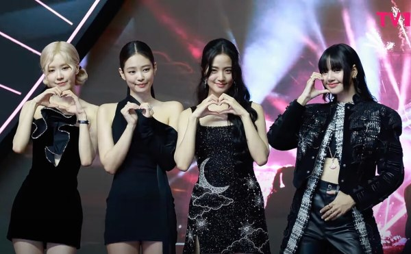

É um grupo feminino sul-coreano formado pela YG Entertainment em 2016.
Ele é composto por quatro integrantes:
🌟 Jisoo
🌟 Jennie
🌟 Lisa
🌟 Rosé
O grupo estreou em 8 de agosto de 2016, com o single Square One, que gerou Whistle e Boombayah, seus primeiros sucessos número um na Gaon Digital Chart da Coreia do Sul e na tabela World Digital Song Sales da Billboard, respectivamente.
Blackpink é o ato feminino coreano de maior sucesso na Billboard Hot 100, alcançando a posição 33 com seus singles de 2020 How You Like That e Sour Candy, e na Billboard 200, alcançando a posição 24 com Kill This Love (2019). Foram o primeiro grupo feminino coreano a entrar e entrar no topo da parada de Artistas Emergentes da Billboard e três vezes no topo da tabela World Digital Song Sales da Billboard. Blackpink também se tornou o primeiro ato feminino coreano a receber uma certificação da Recording Industry Association of America (RIAA) com o singleDdu-Du Ddu-Du (2018), que tem o videoclipe mais visto por um grupo coreano no YouTube. Elas têm os 40 maiores sucessos no Reino Unido entre todos os artistas coreanos. O single Kiss Make Up de 2018 foi a primeira música de um grupo coreano a receber uma certificação da British Phonographic Industry (BPI)e a primeira música de um grupo coreano a ser certificado como platina pela Australian Recording Industry Association (ARIA). Além disso, o single "How You Like That" de 2020 foi a primeira música de um artista coreano a receber uma certificação do Pro-Música Brasil.
A influência da Blackpink se estende online, pois elas conquistaram um grande número de seguidores nas mídias sociais e plataformas de serviço de streaming. Em setembro de 2019, Blackpink ultrapassou One Direction como o grupo musical mais inscrito no YouTube. Em setembro de 2020, Blackpink são o terceiro ato musical mais inscrito e a artista feminina mais inscrita no YouTube, com mais de 47 milhões de inscritos; As íntegrantes do Blackpink também são os indivíduos relacionados à Coreia mais seguidos no Instagram, com a primeira, segunda, terceira e quarta mais seguidas sendo Lisa, Jennie, Rosé e Jisoo, respectivamente. Em novembro de 2019, Blackpink ultrapassou Fifth Harmony e Little Mix e se tornou o grupo feminino mais seguido no Spotify. Em setembro de 2020, o perfil do grupo no Spotify acumulava mais de 14,3 milhões de seguidores. O videoclipe de "Ddu-Du Ddu-Du" se tornou o videoclipe mais assistido por um grupo sul-coreano, superando em janeiro de 2019 e se tornou o primeiro videoclipe de um grupo de K-pop a ultrapassar um bilhão de visualizações em novembro de 2019. Após o lançamento de "How You Like That" e seu videoclipe em 26 de junho de 2020, Blackpink quebrou cinco recordes mundiais do Guinness World Records, incluindo os de vídeo mais assistido do YouTube nas primeiras 24 horas de lançamento (com 86,3 milhões de visualizações) e o maior número de espectadores para uma estreia de vídeo no YouTube (atingindo 1,66 milhão de espectadores simultâneos para a estreia ao vivo).